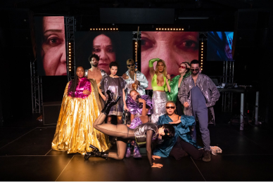
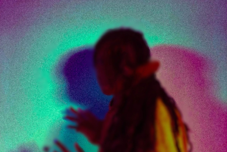

WHAT'S ON

Thu 12 Oct 2023
DESIRE MAREA
[South Africa]

Thu 19 Oct 2023
PUMPITOPERA TRANSATLANTICA
[Brazil]
SEE FULL PROGRAMME
“TRANSFORM HAS CHANGED THE WAY AUDIENCES EXPERIENCE LEEDS”
THE GUARDIAN
WHAT'S NEW

ON MOTH TO GO — With one month to go until Transform 23, we’re today announcing a series of new commissions, DJ sets and immersive encounters to deepen your experience of the festival.

IF WALLS COULD TALK — Opening the festival alongside Ásrún Magnúsdóttir’s SECRETS, Transform’s Young Curators present IF WALLS COULD TALK.
opportunities
Sottobosco: workshop call out
Volunteer call out
Join the distorded rap choir